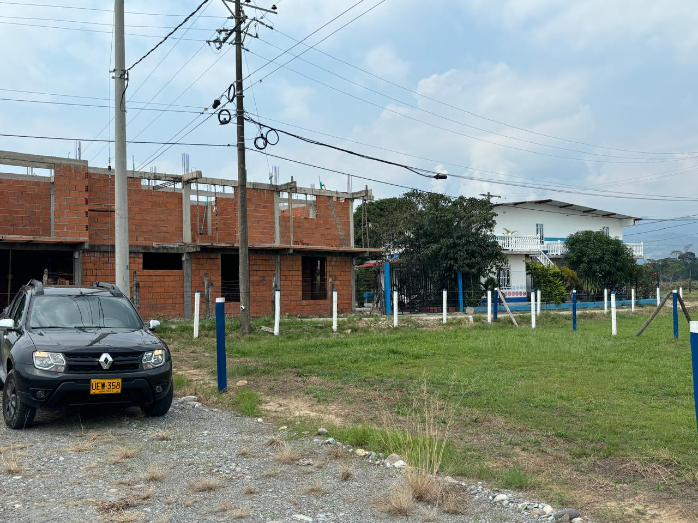
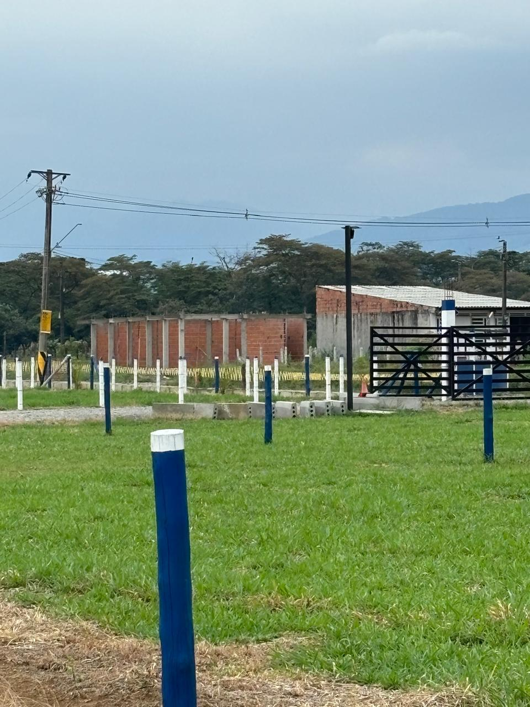
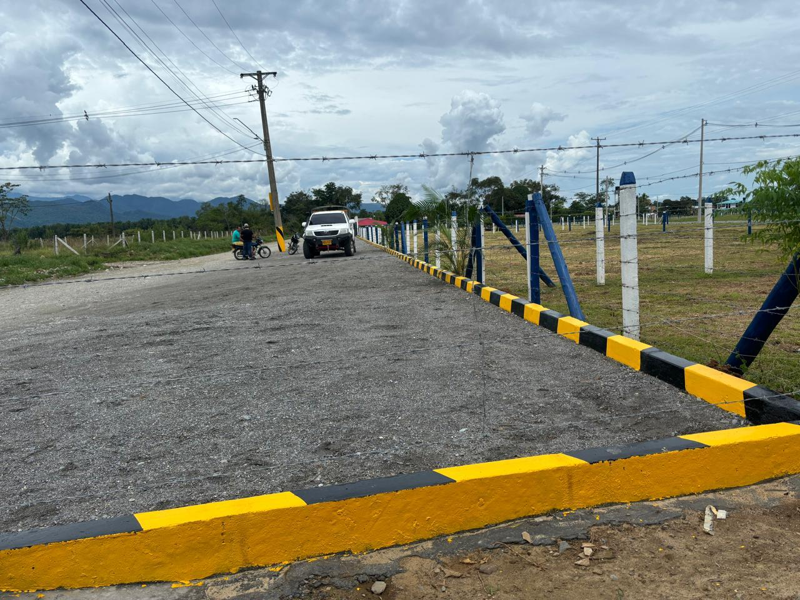
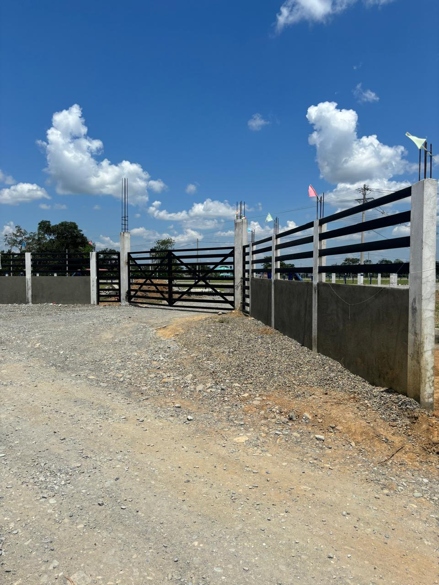
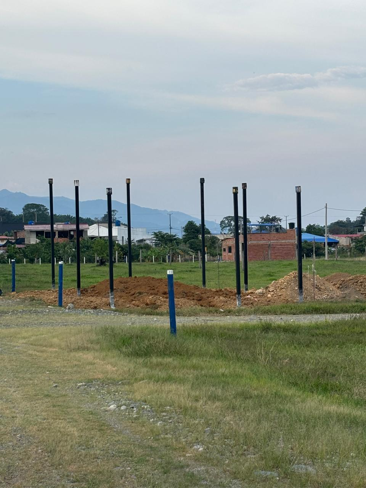
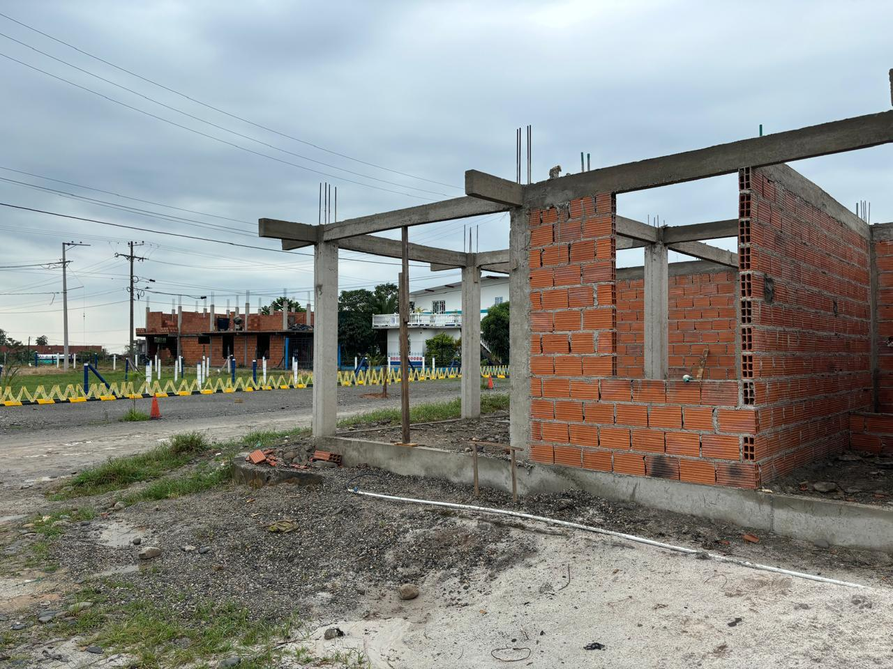
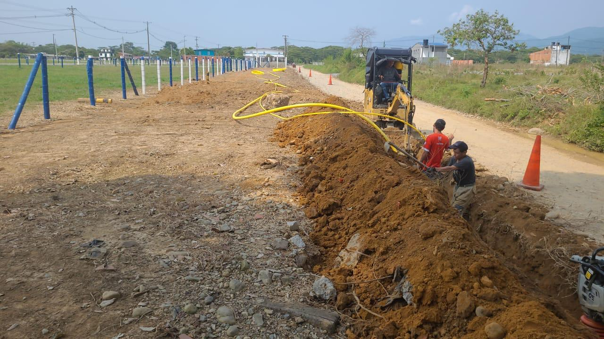
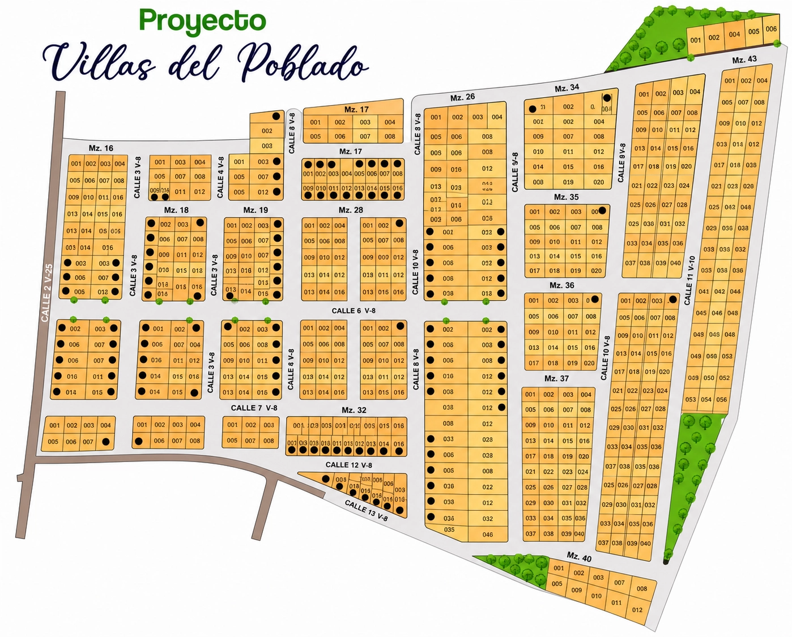

Acacías · Meta · Proyecto principal
Villas del Poblado
La parcelación insignia: lotes con vías, redes y energía instaladas, casas ya construidas y una comunidad que empieza a habitar la tierra.
Resumen ejecutivo
Una parcelación ya en marcha, no una promesa.
Villas del Poblado es el proyecto más consolidado del portafolio. En Acacías, a minutos del casco urbano, sobre el corredor que conecta con Villavicencio.
Los lotes cuentan con vías internas, redes de energía y agua, y ya hay casas construidas habitándose. Invertir aquí es entrar en una comunidad que existe, con servicios verificables sobre el terreno.
Galería
Fotografías del proyecto y su entorno. Material de referencia.








Masterplan

Cada lote, un lugar en el plano.
Distribución general del loteo, vías internas y zonas comunes. El plano definitivo, con áreas exactas y disponibilidad por lote, se comparte en la asesoría.
Características
Lo que hace de la tierra un lugar para vivir.
Acueducto veredal con acometida a cada lote.
Redes eléctricas y postería instaladas por etapas.
Accesos vehiculares a cada lote dentro del proyecto.
Proyección de red de gas natural para las viviendas.
Viviendas construidas y familias que ya habitan el proyecto.
Compra con acompañamiento jurídico hasta la escrituración.
Por qué invertir
La tierra que ya tiene comunidad.
01
Proyecto consolidado
No compras sobre plano vacío: hay vías, servicios y casas habitándose. El riesgo de "que arranque" ya pasó.
02
Corredor en crecimiento
Acacías es una de las ciudades más dinámicas del Meta, sobre el eje que conecta con Villavicencio y Bogotá.
03
Servicios que sostienen el valor
La infraestructura instalada es lo que diferencia un lote de campo de una parcelación con plusvalía real.
04
Uso flexible
Para construir tu casa de campo, para renta futura o simplemente para conservar tierra que se valoriza.
Proceso de compra
Un proceso claro, sin letra pequeña.
01
Conversación inicial
Nos cuentas qué buscas. Te compartimos disponibilidad, precios y proyección — con discreción.
02
Visita guiada
Recorremos el proyecto contigo, lote a lote, para que elijas con los pies en la tierra.
03
Reserva del lote
Apartas tu lote con un acuerdo claro. Definimos plan de pago a tu medida.
04
Escrituración
Formalizamos la compra con acompañamiento jurídico de principio a fin.
Ubicación
Acacías, sobre el corredor del piedemonte.
A minutos del casco urbano de Acacías y sobre la vía que conecta con Villavicencio y Bogotá. Distancias de referencia (demo):
Mapa interactivo · pendiente de coordenadas reales
Preguntas frecuentes
Lo que suelen preguntarnos.
Solicita información de este proyecto.
Te compartimos disponibilidad, precios y proyección de valorización — con discreción y sin compromiso.
Respondemos con discreción · Sin compromiso